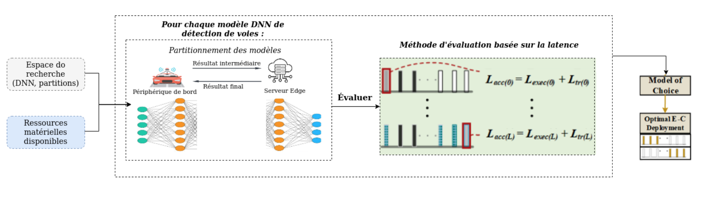

This project focuses on CV parsing and leverages the BEIT model for layout detection. The model consists of three key components: Backbone: We employ BEIT (BERT for Image Transformers) as the backbone for pretraining image transformers. Neck: Our model incorporates a Feature Pyramid Network (FPN) for improved feature extraction. Head: We use Faster R-CNN for object detection and recognition.
Technologies Used: TorchServe, Wandb, Redis RabbitMQ, Hugging Face, LLMs, Document IA, Bert
We have enhanced the efficiency of lane detection models by streamlining execution time and reducing electric power consumption. The algorithm employs distributed computing during inference, which involves partitioning the neural network into multiple components and determining the optimal edge device for executing each part. Our experiments were conducted on two devices: Jetson TX2 and Jetson AGX Xavier, with the goal of optimizing both execution time and energy consumption.
Technologies Used: Python, TensorFlow, OpenCV, MPI, PyTorch, Jetson Nvidia, Edge IA
